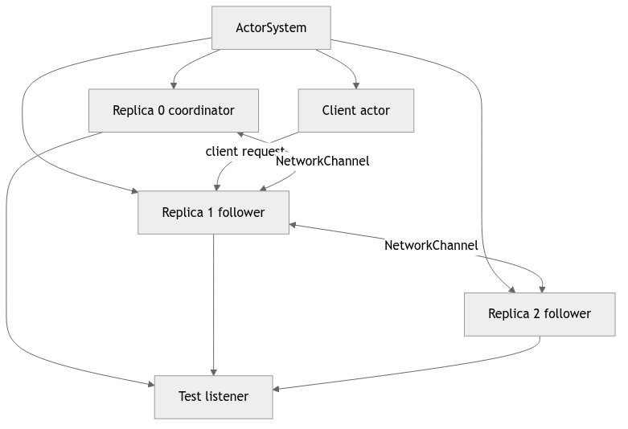
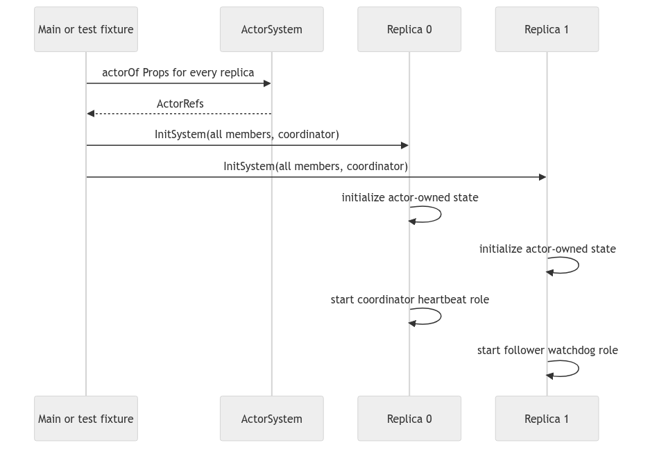
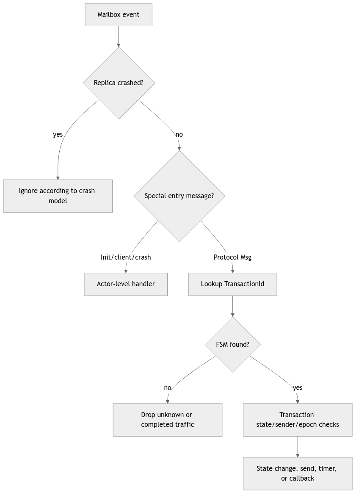
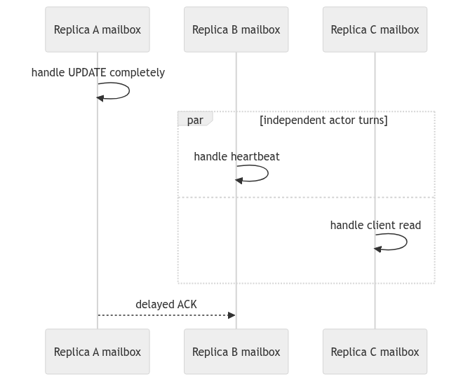
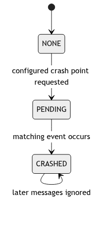
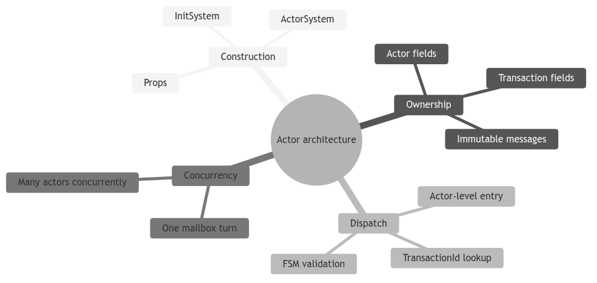

Learning goal. Understand what an Akka actor owns, how the system is created, and how one incoming message becomes a method call without assuming prior Akka experience.
Main snapshot: feature/electionTransaction at d1222a2.
Key files: Main.java, AbstractClient.java, Client.java, AbstractReplica.java, Replica.java.
Think of an actor as a worker with a private desk and one inbox.
Akka calls the inbox a mailbox. ActorRef is the address used to send to that mailbox. The actual Client or Replica Java object is deliberately hidden behind the reference.
Mailbox serialization is valuable because Replica owns mutable state such as positions, activeTransactions, coordinatorID, and crash status. If only the replica’s own handlers modify those fields, ordinary Java locks are unnecessary inside the actor.
This guarantee is local to one actor. Replica 1 and replica 2 still execute concurrently, and messages can be delayed relative to one another.
The client side has two layers:
AbstractClient is supplied course infrastructure. It defines public request messages, timeout/result callback objects, logging wrappers, and the required sendRead/sendWrite API.Client implements the project behavior and the transaction queue.The replica side follows the same pattern:
AbstractReplica supplies IDs, latency configuration, network channels, initialization/crash messages, callbacks, and the required abstract API.Replica owns the actual database and protocol transactions.This inheritance is not decorative. Automated tests construct Client and Replica through required Props factories, send course-defined messages, and observe the required callbacks. A behavior can be algorithmically correct but still fail the project contract if it bypasses these entry points.
Main.main creates an ActorSystem, then creates each replica using system.actorOf(Replica.props(...), name).
Props is a recipe for constructing actors. It lets Akka control actor creation rather than application code calling new Replica(...) and sharing that Java object.
The simplified startup flow is:
Main
-> create ActorSystem
-> create Replica_0 ... Replica_N-1
-> build Map<replicaId, ActorRef>
-> send InitSystem(group, coordinatorId) to every replica
-> create clients and send work
The current Main.java completes replica creation and initialization but leaves client creation and demonstration logic as TODOs. Tests use TestsCommons.createTestSystem instead, so regression tests can still build systems without a complete demo program.
InitSystem contains an immutable copy of the replica map and the initial coordinator ID. It is sent to each actor after all ActorRefs exist.
This solves a construction problem: replica 0 cannot be constructed with references to replica 1 if replica 1 has not been created yet. Two-phase setup avoids that cycle:
In Replica.initSystem, the replica stores the group and coordinator, then creates its local HeartbeatTransaction. Every replica derives the same heartbeat transaction ID from the coordinator’s ActorRef and sequence zero. There is one local heartbeat FSM per replica, but the shared ID lets network heartbeat messages route to the corresponding local FSM.
An actor declares which message classes it accepts through createReceive().
AbstractClient.createBaseReceiveBuilder() handles public ReadRequest and WriteRequest. Client.createReceive() extends it with protocol results/timeouts, probe messages, and a final fallback dispatcher.
AbstractReplica.createBaseReceiveBuilder() handles crash control and, before initialization, InitSystem. Replica.createReceive() adds special protocol entry messages such as WriteMsg, ElectionMsg, ElectionStartMsg, and SynchronizationMsg, then sends remaining Msg objects to the transaction dispatcher.
The ordering matters. A new ElectionMsg may need to create or replace a local election transaction before ordinary routing can find it. That is why Replica.onElectionMsg is a top-level handler rather than only another message passed blindly to onMessage.
The main ownership boundaries are:
Client owns its transaction counter, one current transaction, and a queue of later transactions.Replica owns its positions, coordinator view, epoch view, crash state, network-channel map inherited from AbstractReplica, and active transactions.Transaction object is owned by exactly one client or replica actor. It is not itself an Akka actor.NetworkChannel actor owns one FIFO queue for traffic from one replica to one destination.Transaction objects are safe only because their owner calls them from its serialized mailbox. Passing a mutable transaction object to another actor would break this design.
Client.scheduleTransaction permits only one current transaction. Later client operations wait in scheduledTransactions. When the current transaction calls onTransactionComplete, the client polls and starts the next one.
Replica.scheduleTransaction behaves differently: it adds every transaction to activeTransactions and starts it immediately. A replica may therefore participate in heartbeat, election, and update conversations at the same time.
This difference is intentional:
It also makes correct message correlation essential. The replica must not deliver a message to the wrong active transaction.
A simulated crash does not terminate the Akka actor. Instead, Replica enters a CRASHED mode and ignores protocol activity. Keeping the actor alive lets the test harness send deterministic crash instructions and observe callbacks without relying on Akka supervision or actor restart behavior.
This is a model of crash-stop failure, not a real process crash. The educational question is whether the actor behaves externally like a dead replica: no useful incoming processing and no outgoing protocol traffic.
Tests do not inspect private fields directly. They pass a TestKit listener into propsWithListener and expect callbacks such as:
callbackOnReadResultcallbackOnWriteTimeoutcallbackOnUpdateAppliedcallbackOnElectionStartedcallbackOnCoordinatorElectedThe callbacks convert internal behavior into messages the test probe can observe. Treat them like required output ports of the architecture.
Main is not a complete executable demonstration.Why are transactions ordinary objects instead of actors? They are small FSMs hosted by a client or replica. The owner actor already provides mailbox serialization and a sender identity, so making every transaction a second actor would add lifecycle and routing complexity.
Why does each replica receive InitSystem? It needs a complete immutable membership map and the coordinator identity to route messages, construct the ring, and start the correct heartbeat role.
What prevents two handlers from modifying one replica simultaneously? Akka processes one mailbox message at a time for that actor. This does not prevent other replicas from running concurrently.
Main.main
|
+--> ActorSystem
+--> create Client actor
+--> create one Replica actor per configured id
|
+--> InitSystem(membership, coordinator)
|
+--> install positions/history
+--> create local protocol FSMs
+--> start heartbeat role
The important learning point is that constructors should create an object,
while InitSystem supplies information that is only known after the whole
actor graph exists. Passing the complete membership map in one initialization
message avoids a half-built replica that knows about itself but not its
neighbors. It also gives every replica the same coordinator reference and the
same starting epoch assumptions.
In a createReceive() builder, a line such as
match(InitSystem.class, this::onInitSystem) is a type dispatch rule. Akka
does not call onInitSystem at construction time; it calls it later when an
InitSystem object reaches the mailbox. This explains three details students
often mix up:
The same distinction applies to a transaction FSM. Transaction.onMessage
is ordinary Java method dispatch, but the call is made by the owning actor’s
mailbox handler. The actor gives the FSM serialization; the FSM gives the
actor protocol state. Neither layer alone is the complete behavior.
// Conceptual shape, simplified for study
if (message instanceof InitSystem) {
this.system = ((InitSystem) message).system(); // immutable context
this.heartbeat = new HeartbeatTransaction(...); // actor-local object
this.heartbeat.start(); // schedules local work
}
// Later mailbox turns route protocol messages by transaction id.
if (active.id().equals(message.transactionId())) {
active.onMessage(message);
}
The equality check is a routing guard, not a consistency decision. A matching ID only says “this message belongs to this conversation”; the FSM must still check its current state, sender, epoch, and payload before mutating data.
Imagine a follower receives an election message while its initialization is
still queued. If the implementation silently drops that election, liveness may
be lost. If it processes the election with an empty membership map, it may
send to the wrong neighbor. A robust design either orders initialization before
protocol traffic in the test harness or makes the uninitialized behavior
explicit and observable. Use this thought experiment when reading every
special entry message (InitSystem, crash events, and client requests).
Sketch the fields that belong to the actor (mailbox-owned mutable state) and the fields that belong to a transaction (protocol-local state). Then explain why sharing one mutable transaction object between two replica actors would break the actor model even if Java allowed the reference to be passed.

Every rectangle is an independent mailbox and state boundary. The ActorRef
is a safe address, not a direct Java reference for calling methods on the
actor. A sender constructs an immutable message and uses tell; the receiver
later handles it on its own actor thread. The transaction objects inside R0
cannot be read or modified by R1. This isolation is the reason mutable FSMs can
be ordinary objects: only their owning actor calls them.
When studying a field, ask who owns it. Membership, coordinator reference,
positions, history, crash status, and activeTransactions belong to a replica.
An ACK set, FSM state, timeout handle, and attempt number belong to one
transaction. A static mutable collection would escape both boundaries and
should immediately attract attention in a review.

This two-phase construction solves a circular dependency: the membership map
cannot be complete until all ActorRefs exist. Constructors therefore capture
fixed configuration, while InitSystem supplies the completed graph. Students
should distinguish Java object construction from protocol readiness. A field
being non-null after the constructor does not mean the replica knows its ring
neighbor, current coordinator, or heartbeat role.
Inspect handlers that may run before initialization. A clear design either guarantees ordering in the fixture, stashes early protocol messages, or rejects them with an explicit reason. Processing an election token with an empty member map is worse than delaying it because it may generate a structurally invalid ring traversal.

Actor-level dispatch answers “which local component owns this event?” The FSM then answers “is it valid now?” The second question cannot be skipped. A valid transaction ID on an ACK does not prove the sender is a participant, and a valid watchdog ID does not prove its version is current. This layered checking is the recurring pattern across heartbeat, update, and election.
Trace one message in the debugger by recording its runtime class, sender, transaction ID, destination actor, active FSM state, and resulting effect. If you cannot fill one column, you have located a hidden assumption worth documenting or testing.

Akka guarantees one handler at a time inside A, but B and C execute independently. Therefore, assigning a field and sending a message inside one A handler is locally ordered, not globally atomic. C may serve a read between A’s local update and B’s ACK. Protocol states and epochs make those interleavings safe; actor serialization alone cannot.
This distinction is a common exam trap. “Actors avoid races” is too broad. Actors avoid unsynchronized concurrent access to one actor’s encapsulated fields. They do not avoid races between messages, timeouts, or decisions made by different actors. Distributed algorithms are largely about controlling those remaining races.

The actor process remains addressable after a simulated crash so tests can use
stable ActorRefs. “Crashed” is therefore a semantic state enforced by guards,
not Akka termination. Every entry path—including timers and self-messages—must
observe it. A forgotten handler can resurrect protocol output even though
ordinary network messages are blocked.
For a code audit, enumerate the receive builder’s message types and mark the crash guard for each. Then enumerate direct transaction calls made from actor methods. This creates a concrete completeness argument rather than relying on one top-level boolean.

Explain the architecture without using the word “thread” until the end. Start with ownership and messages. Next, draw the initialization sequence and show why the member map cannot be passed completely to the first replica’s constructor. Finally, take an ACK and explain both dispatch stages.
Practical exercises: add a test for a protocol message before initialization;
add a test for a correct ID but wrong sender; and add a crash test in which a
queued timer arrives after the state becomes CRASHED. For each test, state
the expected absence of side effects as well as the expected message. A good
answer names what must not change: position, history, active transaction count,
or listener callback count.